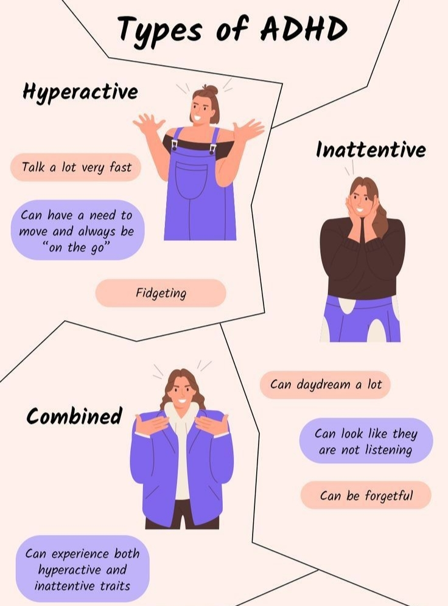
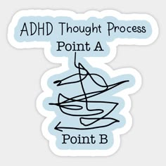

Understand the types of ADHD
Recognizing the different types of ADHD—whether hyperactive, inattentive, or a combination of both—can provide valuable insight into your unique experiences and guide you toward the right strategies and support for a more fulfilling life.

Do I Have ADD? Diagnosis & Next Steps
Due to limited training, many doctors miss diagnosing ADHD, so patients often need to advocate for themselves to get an accurate diagnosis and effective treatment.
Learning to Let Go of ADHD
The writer reflects on discovering their ADHD at 49, a revelation that brought both clarity and grief, leading to self-acceptance and new strategies for managing their unique brain chemistry.
ADHD and Sleep Problems
Synopsis
Title
Synopsis
Title
Synopsis